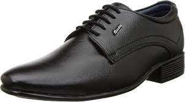
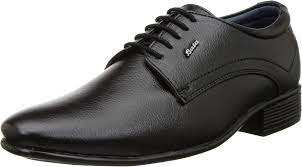

About Our Company
 
The T. & A. Baťa Shoe Company was founded on 21 September 1894[6] in the Moravian town of Zlín, Austria-Hungary (today in the Czech Republic), by Tomáš Baťa, his brother Antonín and his sister Anna, whose family had been cobblers for generations.[1] The company employed 10 full-time employees with a fixed work schedule and a regular weekly wage.

The T. & A. Baťa Shoe Company was founded on 21 September 1894[6] in the Moravian town of Zlín, Austria-Hungary (today in the Czech Republic), by Tomáš Baťa, his brother Antonín and his sister Anna, whose family had been cobblers for generations.[1] The company employed 10 full-time employees with a fixed work schedule and a regular weekly wage.
Tomáš, Antonín, and Anna Baťa
In the summer of 1895, Tomáš was facing financial difficulties.[7] To overcome these setbacks, he decided to sew shoes from canvas instead of leather. This type of shoe became very popular and helped the company grow to 50 employees.[8] Four years later, Baťa installed its first steam-driven machines, beginning a period of rapid modernisation. In 1904, Tomáš read a newspaper article about machines being made in the United States such as Jan Ernst Matzeliger's automatic laster. Therefore, he took three workers and journeyed to Lynn, a city outside Boston that was then the center of the world footwear industry, in order to study and understand the American system of mass production. After six months he returned to Zlín and he introduced mechanized production techniques that allowed the Baťa Shoe Company to become one of the first mass producers of shoes in Europe. Its first mass product, the "Baťovky," was a leather and textile shoe for working people that was notable for its simplicity, style, light weight and affordable price. Its success helped fuel the company's growth, and after Antonín's death in 1908, Tomáš brought two of his younger brothers, Jan and Bohuš, into the business. Initial export sales and the first ever sales agencies began in Germany in 1909, followed by the Balkans and the Middle East. Baťa shoes were considered to be excellent quality, and were available in more styles than had ever been offered before. By 1912, Baťa was employing 1500 full-time workers, plus another several hundred who worked out of their homes in neighbouring villages
Back to Home